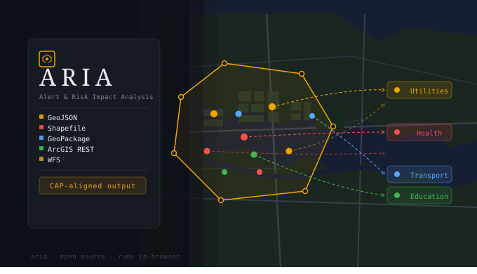
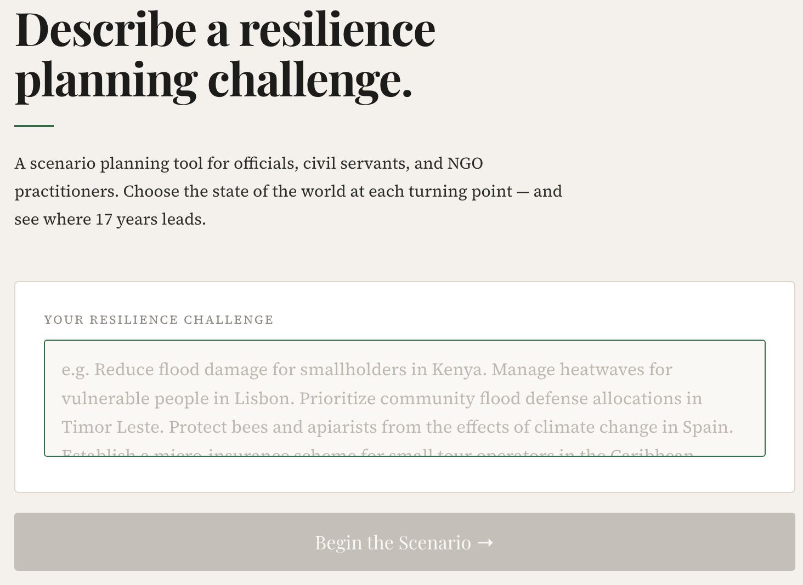
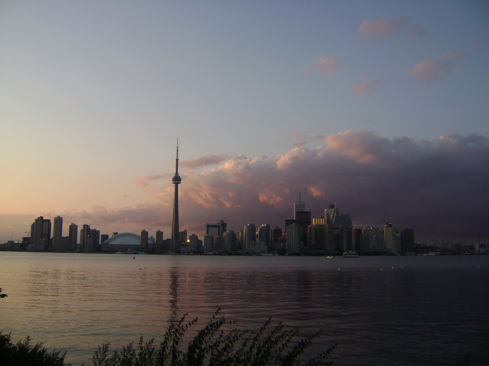

Last Larch
Projects & tools
4 active projects

Tool
Alert & Risk Impact Analysis. A system that retrieves and summarizes GIS data for defined polygons, supporting contextual emergency alerts and scenario planning.
View project →

Simulator
A climate scenario planning tool for officials, civil servants, and practitioners. Choose the state of the world at each turning point and see where 17 years leads.
View project →

Dataset
Disaster Impact: Complete Events. Blended actual and synthetic disaster impacts with global coverage and complete indicator coverage.
View project →

Platform
Local intelligence with open data. Deep localisation — analysing public data to surface neighbourhood-level insight.
View project →